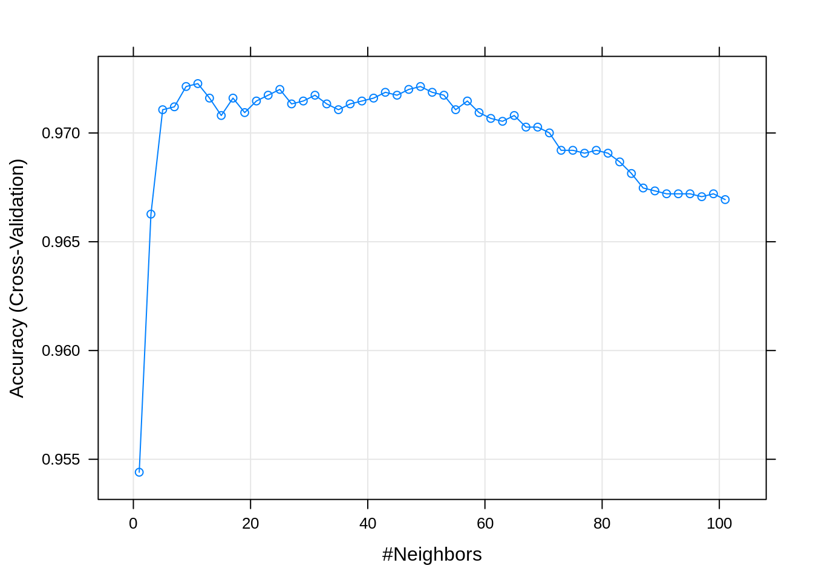
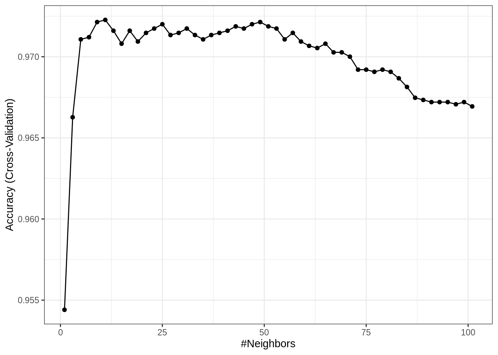
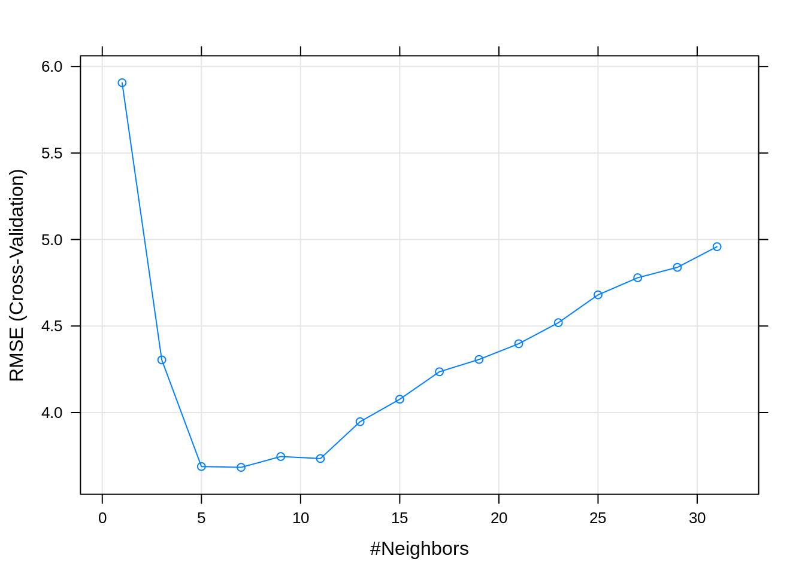
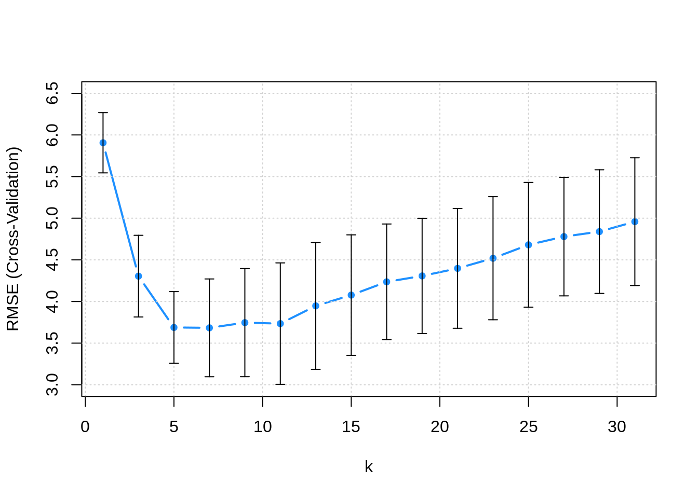
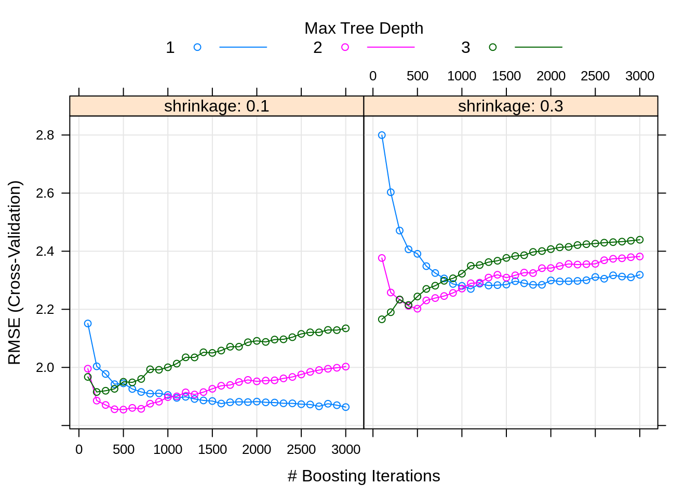

Chapter 14 Supervised Learning Overview II
This chapter is currently just a bit of a placeholder that introduces caret as a systematized way of doing supervised learning.
Now that we have seen a number of classification and regression methods, and introduced cross-validation, we see the general outline of a predictive analysis:
- Test-train split the available data
- Consider a learning method(s)
- Decide on a set of candidate models (specify possible tuning parameters for each method)
- Use resampling to find the “best model” by choosing the values of the tuning parameters
- Use chosen model to make predictions
- Calculate relevant metrics on the test data
- Consider a learning method(s)
At face value it would seem like it should be easy to repeat this process for a number of different methods, however we have run into a number of difficulties attempting to do so with R.
- The
predict()function seems to have a different behavior for each new method we see. - Many methods have different cross-validation functions, or worse yet, no built-in process for cross-validation. (We’ve been writing code ourselves to perform cross-validation.)
- Not all methods expect the same data format. Some methods do not use formula syntax.
- Different methods have different handling of categorical predictors. Some methods cannot handle factor variables.
Thankfully, the R community has essentially provided a silver bullet for these issues, the caret package. Returning to the above list, we will see that a number of these tasks are directly addressed in the caret package.
- Test-train split the available data
createDataPartition()will take the place of our manual data splitting. It will also do some extra work to ensure that the train and test samples are somewhat similar, especially with respect to the distribution of the response variable.
- Specify possible tuning parameters for method
expand.grid()is not a function incaret, but we will get in the habit of using it to specify a grid of tuning parameters.
- Use resampling to find the “best model” by choosing the values of the tuning parameters
trainControl()will specify the resampling schemetrain()is the workhorse ofcaret. It takes the following information then trains (tunes) the requested model:form, a formula, such asy ~ .- This specifies the response and which predictors (or transformations of) should be used.
data, the data used for trainingtrControlwhich specifies the resampling scheme, that is, how cross-validation should be performed to find the best values of the tuning parameterspreProcesswhich allows for specification of data pre-processing such as centering and scalingmethod, a statistical learning method from a long list of available modelstuneGridwhich specifies the tuning parameters to train over
- Use chosen model to make predictions
predict()used on objects of typetrainwill be truly magical!
14.1 Classification
To illustrate caret, first for classification, we will use the Default data from the ISLR package.
We first test-train split the data using createDataPartition. Here we are using 75% of the data for training.
set.seed(430)
default_idx = createDataPartition(Default$default, p = 0.75, list = FALSE)
default_trn = Default[default_idx, ]
default_tst = Default[-default_idx, ]At first glance, it might appear as if the use of createDataPartition() is no different than our previous use of sample(). However, createDataPartition() tries to ensure a split that has a similar distribution of the supplied variable in both datasets. See the documentation for details.
After splitting the data, we can begin training a number of models. We begin with a simple additive logistic regression.
default_glm_mod = train(
form = default ~ .,
data = default_trn,
trControl = trainControl(method = "cv", number = 5),
method = "glm",
family = "binomial"
)Here, we have supplied four arguments to the train() function form the caret package.
form = default ~ .specifies thedefaultvariable as the response. It also indicates that all available predictors should be used.data = default_trnspecifies that training will be down with thedefault_trndatatrControl = trainControl(method = "cv", number = 5)specifies that we will be using 5-fold cross-validation.method = glmspecifies that we will fit a generalized linear model.
The method essentially specifies both the model (and more specifically the function to fit said model in R) and package that will be used. The train() function is essentially a wrapper around whatever method we chose. In this case, the function is the base R function glm(), so no additional package is required. When a method requires a function from a certain package, that package will need to be installed. See the list of available models for package information.
The list that we have passed to the trControl argument is created using the trainControl() function from caret. The trainControl() function is a powerful tool for specifying a number of the training choices required by train(), in particular the resampling scheme.
## $method
## [1] "cv"
##
## $number
## [1] 5
##
## $repeats
## [1] NAHere we see just the first three elements of this list, which are related to how the resampling will be done. These are the three elements that we will be most interested in. Here, only the first two are relevant.
methodspecifies how resampling will be done. Examples includecv,boot,LOOCV,repeatedcv, andoob.numberspecifies the number of times resampling should be done for methods that require resample, such as,cvandboot.repeatsspecifies the number of times to repeat resampling for methods such asrepeatedcv
For details on the full capabilities of this function, see the relevant documentation. The out-of-bag, oob which is a sort of automatic resampling for certain statistical learning methods, will be introduced later.
We’ve also passed an additional argument of "binomial" to family. This isn’t actually an argument for train(), but an additional argument for the method glm. In actuality, we don’t need to specify the family. Since default is a factor variable, caret automatically detects that we are trying to perform classification, and would automatically use family = "binomial". This isn’t the case if we were simply using glm().
## Generalized Linear Model
##
## 7501 samples
## 3 predictor
## 2 classes: 'No', 'Yes'
##
## No pre-processing
## Resampling: Cross-Validated (5 fold)
## Summary of sample sizes: 6001, 6000, 6001, 6001, 6001
## Resampling results:
##
## Accuracy Kappa
## 0.9728038 0.4248613Called the stored train() object summarizes the training that we have done. We see that we used 7501 observations that had a binary class response and three predictors. We have not done any data pre-processing, and have utilized 5-fold cross-validation. The cross-validated accuracy is reported. Note that, caret is an optimist, and prefers to report accuracy (proportion of correct classifications) instead of the error that we often considered before (proportion of incorrect classifications).
## [1] "method" "modelInfo" "modelType" "results" "pred"
## [6] "bestTune" "call" "dots" "metric" "control"
## [11] "finalModel" "preProcess" "trainingData" "resample" "resampledCM"
## [16] "perfNames" "maximize" "yLimits" "times" "levels"
## [21] "terms" "coefnames" "contrasts" "xlevels"We see that there is a wealth of information stored in the list returned by train(). Two elements that we will often be interested in are results and finalModel.
## parameter Accuracy Kappa AccuracySD KappaSD
## 1 none 0.9728038 0.4248613 0.002956624 0.07544475The resutls show some more detailed results, in particular AccuracySD which gives us an estimate of the uncertainty in our accuracy estimate.
##
## Call: NULL
##
## Coefficients:
## (Intercept) studentYes balance income
## -1.070e+01 -6.992e-01 5.676e-03 4.383e-07
##
## Degrees of Freedom: 7500 Total (i.e. Null); 7497 Residual
## Null Deviance: 2192
## Residual Deviance: 1186 AIC: 1194The finalModel is a model object, in this case, the object returned from glm(). This final model, is fit to all of the supplied training data. This model object is often used when we call certain relevant functions on the object returned by train(), such as summary()
##
## Call:
## NULL
##
## Deviance Residuals:
## Min 1Q Median 3Q Max
## -2.1317 -0.1420 -0.0568 -0.0210 3.7348
##
## Coefficients:
## Estimate Std. Error z value Pr(>|z|)
## (Intercept) -1.070e+01 5.607e-01 -19.079 < 2e-16 ***
## studentYes -6.992e-01 2.708e-01 -2.582 0.00984 **
## balance 5.676e-03 2.644e-04 21.471 < 2e-16 ***
## income 4.383e-07 9.389e-06 0.047 0.96276
## ---
## Signif. codes: 0 '***' 0.001 '**' 0.01 '*' 0.05 '.' 0.1 ' ' 1
##
## (Dispersion parameter for binomial family taken to be 1)
##
## Null deviance: 2192.2 on 7500 degrees of freedom
## Residual deviance: 1185.8 on 7497 degrees of freedom
## AIC: 1193.8
##
## Number of Fisher Scoring iterations: 8We see that this summary is what we had seen previously from objects of type glm.
To obtain test accuracy, we will need to make predictions on the test data. With the object returned by train(), this is extremely easy.
## [1] No No No No No No
## Levels: No YesWe see that by default, the predict() function is returning classifications. This will be true no matter what method we use!
# test acc
calc_acc(actual = default_tst$default,
predicted = predict(default_glm_mod, newdata = default_tst))## [1] 0.9735894If instead of the default behavior of returning classifications, we instead wanted predicted probabilities, we simply specify type = "prob".
## No Yes
## 2 0.9988332 1.166819e-03
## 4 0.9995369 4.630821e-04
## 7 0.9975279 2.472097e-03
## 8 0.9988855 1.114516e-03
## 10 0.9999771 2.290522e-05
## 11 0.9999887 1.134693e-05Notice that this returns the probabilities for all possible classes, in this case No and Yes. Again, this will be true for all methods! This is especially useful for multi-class data!.
14.1.1 Tuning
Since logistic regression has no tuning parameters, we haven’t really highlighted the full potential of caret. We’ve essentially used it to obtain cross-validated results, and for the more well-behaved predict() function. These are excellent improvements over our previous methods, but the real power of caret is its ability to provide a framework for tuning model.
To illustrate tuning, we now use knn as our method, which performs \(k\)-nearest neighbors.
default_knn_mod = train(
default ~ .,
data = default_trn,
method = "knn",
trControl = trainControl(method = "cv", number = 5)
)First, note that we are using formula syntax here, where previously we needed to create separate response and predictors matrices. Also, we’re using a factor variable as a predictor, and caret seems to be taking care of this automatically.
## k-Nearest Neighbors
##
## 7501 samples
## 3 predictor
## 2 classes: 'No', 'Yes'
##
## No pre-processing
## Resampling: Cross-Validated (5 fold)
## Summary of sample sizes: 6001, 6000, 6001, 6001, 6001
## Resampling results across tuning parameters:
##
## k Accuracy Kappa
## 5 0.9677377 0.2125623
## 7 0.9664047 0.1099835
## 9 0.9680044 0.1223319
##
## Accuracy was used to select the optimal model using the largest value.
## The final value used for the model was k = 9.Here we are again using 5-fold cross-validation and no pre-processing. Notice that we now have multiple results, for k = 5, k = 7, and k = 9.
Let’s modifying this training by introducing pre-processing, and specifying our own tuning parameters, instead of the default values above.
default_knn_mod = train(
default ~ .,
data = default_trn,
method = "knn",
trControl = trainControl(method = "cv", number = 5),
preProcess = c("center", "scale"),
tuneGrid = expand.grid(k = seq(1, 101, by = 2))
)Here, we’ve specified that we would like to center and scale the data. Essentially transforming each predictor to have mean 0 and variance 1. The documentation on the preProcess() function provides examples of additional possible pre-processing. IN our call to train() we’re essentially specifying how we would like this function applied to our data.
We’ve also provided a “tuning grid,” in this case, the values of k to try. The tuneGrid argument expects a data frame, which expand.grid() returns. We don’t actually need expand.grid() for this example, but it will be a useful habit to develop when we move to methods with multiple tuning parameters.
## k Accuracy Kappa AccuracySD KappaSD
## 1 1 0.9544051 0.2843363 0.006566472 0.08989820
## 2 3 0.9662702 0.3633701 0.004317478 0.09324199
## 3 5 0.9710698 0.4122812 0.004076929 0.11219277
## 4 7 0.9712032 0.4031654 0.003576867 0.09624856
## 5 9 0.9721364 0.4250236 0.003987725 0.09388466Since how we have a large number of results, display the entire results would create a lot of clutter. Instead, we can plot the tuning results by calling plot() on the object returned by train().

By default, caret utilizes the lattice graphics package to create these plots. Recently, additional support for ggplot2 style graphics has been added for some plots.

Now that we are dealing with a tuning parameter, train() determines the best value of those considered, by default selecting the best (highest cross-validated) accuracy, and returning that value as bestTune.
## k
## 6 11get_best_result = function(caret_fit) {
best = which(rownames(caret_fit$results) == rownames(caret_fit$bestTune))
best_result = caret_fit$results[best, ]
rownames(best_result) = NULL
best_result
}Sometimes it will be useful to obtain the results for only that value. The above function does this automatically.
## k Accuracy Kappa AccuracySD KappaSD
## 1 11 0.97227 0.4225433 0.002654708 0.07773239While we did fit a large number of models, the “best” model is stored in finalModel. After this model was determined to be the best via cross-validation, it is then fit to the entire training dataset.
## 11-nearest neighbor model
## Training set outcome distribution:
##
## No Yes
## 7251 250With this model, we can again make predictions and obtain predicted probabilities.
## No Yes
## 1 1.0000000 0.00000000
## 2 1.0000000 0.00000000
## 3 1.0000000 0.00000000
## 4 1.0000000 0.00000000
## 5 0.9090909 0.09090909
## 6 0.9090909 0.09090909As an example of a multi-class response consider the following three models fit to the the iris data. Note that the first model is essentially “multinomial logistic regression,” but you might notice it also has a tuning parameter now. (Spoiler: It’s actually a neural network, so you’ll need the nnet package.)
iris_log_mod = train(
Species ~ .,
data = iris,
method = "multinom",
trControl = trainControl(method = "cv", number = 5),
trace = FALSE
)iris_knn_mod = train(
Species ~ .,
data = iris,
method = "knn",
trControl = trainControl(method = "cv", number = 5),
preProcess = c("center", "scale"),
tuneGrid = expand.grid(k = seq(1, 21, by = 2))
)iris_qda_mod = train(
Species ~ .,
data = iris,
method = "qda",
trControl = trainControl(method = "cv", number = 5)
)We can obtain predicted probabilities with these three models. Notice that they give the predicted probability for each class, using the same syntax for each model.
## setosa versicolor virginica
## 1 1.0000000 1.526406e-09 2.716417e-36
## 2 0.9999996 3.536476e-07 2.883729e-32
## 3 1.0000000 4.443506e-08 6.103424e-34
## 4 0.9999968 3.163905e-06 7.117010e-31
## 5 1.0000000 1.102983e-09 1.289946e-36
## 6 1.0000000 3.521573e-10 1.344907e-35## setosa versicolor virginica
## 1 1 0 0
## 2 1 0 0
## 3 1 0 0
## 4 1 0 0
## 5 1 0 0
## 6 1 0 0## setosa versicolor virginica
## 1 1 4.918517e-26 2.981541e-41
## 2 1 7.655808e-19 1.311032e-34
## 3 1 1.552279e-21 3.380440e-36
## 4 1 8.300396e-19 8.541858e-32
## 5 1 3.365614e-27 2.010147e-41
## 6 1 1.472533e-26 1.271928e-4014.2 Regression
To illustrate the use of caret for regression, we’ll consider some simulated data.
gen_some_data = function(n_obs = 50) {
x1 = seq(0, 10, length.out = n_obs)
x2 = runif(n = n_obs, min = 0, max = 2)
x3 = sample(c("A", "B", "C"), size = n_obs, replace = TRUE)
x4 = round(runif(n = n_obs, min = 0, max = 5), 1)
x5 = round(runif(n = n_obs, min = 0, max = 5), 0)
y = round(x1 ^ 2 + x2 ^ 2 + 2 * (x3 == "B") + rnorm(n = n_obs), 3)
data.frame(y, x1, x2, x3, x4, x5)
}We first simulate a train and test dataset.
Fitting knn works nearly identically to its use for classification. Really, the only difference here is that we have a numeric response, which caret understands to be a regression problem.
sim_knn_mod = train(
y ~ .,
data = sim_trn,
method = "knn",
trControl = trainControl(method = "cv", number = 5),
# preProcess = c("center", "scale"),
tuneGrid = expand.grid(k = seq(1, 31, by = 2))
)## [1] "Regression"Notice that we’ve commented out the line to perform pre-processing. Can you figure out why?
## k RMSE Rsquared MAE RMSESD RsquaredSD MAESD
## 1 7 3.6834 0.9863968 2.646447 0.587191 0.002630169 0.3388258A few things to notice in the results. In addition to the usual RMSE, which is be used to determine the best model, we also have MAE, the mean absolute error. We are also given standard deviations of both of these metrics.

The following plot adds error bars to RMSE estimate for each k.

Sometimes, instead of simply picking the model with the best RMSE (or accuracy), we pick the simplest model within one standard error of the model with the best RMSE. Here then, we would consider k = 11 instead of k = 7 since there isn’t a statistically significant difference. This is potentially a very good idea in practice. By picking a a simpler model, we are essentially at less risk of overfitting, especially since in practice, future data may be slightly different than the data that we are training on. If you’re trying to win a Kaggle competition, this might not be as useful, since often the test and train data come from the exact same source.
- TODO: additional details about 1-SE rule.
Since we simulated this data, we have a rather large test dataset. This allows us to compare our cross-validation error estimate, to an estimate using (an impractically large) test set.
## [1] 3.6834## [1] 3.412332Here we see that the cross-validated RMSE is a bit of an overestimate, but still rather close to the test error. The real question is, are either of these any good? Is this model predicting well? No! Notice that we simulated this data with an error standard deviation of 1!
14.2.1 Methods
Now that caret has given us a pipeline for a predictive analysis, we can very quickly and easily test new methods. For example, in an upcoming chapter we will discuss boosted tree models, but now that we understand how to use caret, in order to use a boosted tree model, we simply need to know the “method” to do so, which in this case is gbm. Beyond knowing that the method exists, we just need to know its tuning parameters, in this case, there are four. We actually could get away with knowing nothing about them, and simply specify a tuneLength, then caret would automatically try some reasonable values.
Instead, we could read the caret documentation to find the tuning parameters, as well as the required packages. For now, we’ll simply use the following tuning grid. In later chapters, we’ll discuss how these effect the model.
gbm_grid = expand.grid(interaction.depth = c(1, 2, 3),
n.trees = (1:30) * 100,
shrinkage = c(0.1, 0.3),
n.minobsinnode = 20)
head(gbm_grid)## interaction.depth n.trees shrinkage n.minobsinnode
## 1 1 100 0.1 20
## 2 2 100 0.1 20
## 3 3 100 0.1 20
## 4 1 200 0.1 20
## 5 2 200 0.1 20
## 6 3 200 0.1 20set.seed(42)
sim_gbm_mod = train(
y ~ .,
data = sim_trn,
trControl = trainControl(method = "cv", number = 5),
method = "gbm",
tuneGrid = gbm_grid,
verbose = FALSE
)We added verbose = FALSE to the train() call to suppress some of the intermediate output of the gbm fitting procedure.
How this training is happening is a bit of a mystery to us right now. What is this method? How does it deal with the factor variable as a predictor? We’ll answer these questions later, for now, we do know how to evaluate how well the method is working.
| shrinkage | interaction.depth | n.minobsinnode | n.trees | RMSE | Rsquared | MAE | RMSESD | RsquaredSD | MAESD | |
|---|---|---|---|---|---|---|---|---|---|---|
| 1 | 0.1 | 1 | 20 | 100 | 2.151 | 0.995 | 1.569 | 0.321 | 0.001 | 0.185 |
| 91 | 0.3 | 1 | 20 | 100 | 2.800 | 0.991 | 2.068 | 0.180 | 0.001 | 0.183 |
| 31 | 0.1 | 2 | 20 | 100 | 1.996 | 0.996 | 1.439 | 0.286 | 0.001 | 0.165 |
| 121 | 0.3 | 2 | 20 | 100 | 2.377 | 0.994 | 1.784 | 0.285 | 0.001 | 0.191 |
| 61 | 0.1 | 3 | 20 | 100 | 1.967 | 0.996 | 1.410 | 0.325 | 0.001 | 0.148 |
| 151 | 0.3 | 3 | 20 | 100 | 2.166 | 0.995 | 1.620 | 0.150 | 0.001 | 0.135 |

## n.trees interaction.depth shrinkage n.minobsinnode
## 35 500 2 0.1 20Here we obtain the set of tuning parameters that performed best. Based on the above plot, do you think we considered enough possible tuning parameters?
## shrinkage interaction.depth n.minobsinnode n.trees RMSE Rsquared
## 1 0.1 2 20 500 1.854777 0.9962175
## MAE RMSESD RsquaredSD MAESD
## 1 1.346841 0.2556658 0.0007945475 0.1555363## [1] 1.568517Again, the cross-validated result is overestimating the error a bit. Also, this model is a big improvement over the knn model, but we can still do better.
sim_lm_mod = train(
y ~ poly(x1, 2) + poly(x2, 2) + x3,
data = sim_trn,
method = "lm",
trControl = trainControl(method = "cv", number = 5)
)##
## Call:
## lm(formula = .outcome ~ ., data = dat)
##
## Coefficients:
## (Intercept) `poly(x1, 2)1` `poly(x1, 2)2` `poly(x2, 2)1` `poly(x2, 2)2`
## 34.75615 645.50804 167.12875 26.00951 6.86587
## x3B x3C
## 1.80700 0.07108Here we fit a good old linear model, except, we specify a very specific formula.
## [1] 1.046702## [1] 1.035896This model dominates the previous two. The gbm model does still have a big advantage. The lm model needed the correct form of the model, whereas gbm nearly learned it automatically!
This question of which variables should be included is where we will turn our focus next. We’ll consider both what variables are useful for prediction, and learn tools to asses how useful they are.
14.3 External Links
- The
caretPackage - Reference documentation for thecaretpackage inbookdownformat. caretModel List - List of available models incaret.caretModel List, By Tag - Gives information on tuning parameters and necessary packages.- Applied Predictive Modeling - Book from the author of the
caretpackage, Max Kuhn, as well as Kjell Johnson. Further discussion on use of statistical learning methods in practice.